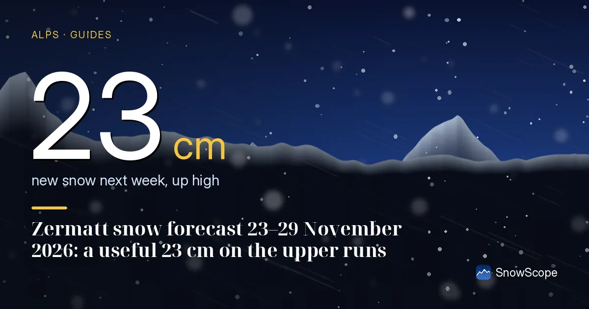

Zermatt snow forecast 23–29 November 2026: a useful 23 cm on the upper runs
Zermatt has fresh snow on the way for the week of 23–29 November. At the top, around 3800 m, our forecast adds up to 23 cm, with 7 cm in a low case and 39 cm in a high one; mid-mountain gets 19 cm and the base around 1700 m 16 cm.
See the live snow forecast for Zermatt in the SnowScope appSnow depth, powder alerts and the 3D map, free.
Next week, height by height
At the top (around 3800 m) the week totals 23 cm, 7–39 cm across our range. Mid-mountain around 2700 m gets 19 cm (6–33 cm), and the base around 1700 m 16 cm (4–27 cm).
The snow is not spread evenly. The days that matter at the top are Wednesday 25 (4 cm, up to 4), Thursday 26 (12 cm, up to 21) and Sunday 29 (4 cm, up to 7); the rest of the week is close to dry.

Where the good snow will be
Thursday 26 November is the snowiest day up top: 12 cm in the middle of our forecast and up to 21 cm in the high case. The morning after a snowy day is usually the one to ski, once lifts and patrols have caught up.
The snow lies best on the Matterhorn glacier slopes and the Theodul glacier towards Italy. For the softest turns, look to the glacier runs and the Gornergrat side, the coldest of Zermatt's areas. Lower down, the home runs down to Furi and the village will be the first to suffer if the air turns mild.
Snow or rain at the bottom?
The gap between 23 cm at the top and 16 cm at around 1700 m points to a snow line somewhere on the lower slopes: dry snow up high, wet snow lower down, perhaps rain at times in the village.
Zermatt has glacier skiing almost all year, so new snow up high is a quality boost rather than a season opener.
Is Zermatt the best bet nearby?
At the top, next week, our forecast gives Cervinia (10 km away) 23 cm, Saas-Fee (18 km away) 22 cm and Verbier (39 km away) 24 cm, against 23 cm here.
The differences are small: the storm covers this whole corner of the Alps evenly, so pick on terrain and lifts, not on the snow total.
What 17–20 November leaves behind
The first instalment comes this week: 34 cm on the upper slopes of Zermatt from 17 to 20 November, 16 cm lower down. Next week adds a second layer on top.
What could change
Reasonably, with a caveat. The snow is coming to Zermatt, but the top could end up anywhere between 7 and 39 cm, and the middle value of 23 cm is only the halfway mark.
We will refresh these numbers every day; the resort page carries the latest version.
Tips for skiers
- Fresh snow on a young snowpack: read the Swiss avalanche bulletin before any off-piste plan.
- Check the resort's own opening date and lift status: snow on the mountain does not mean lifts are running.
- Plan around the top's 23 cm, and keep the high case of 39 cm as a bonus.
More maps (external sites)
About these numbers
Snow numbers: our two-week snow forecast issued on 16 November 2026, read at three heights of the resort (top, mid-mountain, base). Each total is the middle of a range, with a low and a high case. These are estimates for the slopes, not resort measurements, and forecasts move from day to day: check the live map before you go.
Cite this report
For research, teaching or the press: the numbers and charts are free to reuse under CC BY 4.0 with this citation.
SnowScope (2026), Zermatt snow forecast 23–29 November 2026: a useful 23 cm on the upper runs, https://snowscope.app/blog/en/2026/11/zermatt-snow-forecast-next-week-23-29-november-2026.html, accessed 2026-11-16
SnowScope (Atlas Labs). (2026, November 16). Zermatt snow forecast 23–29 November 2026: a useful 23 cm on the upper runs. SnowScope snow reports. https://snowscope.app/blog/en/2026/11/zermatt-snow-forecast-next-week-23-29-november-2026.html
BibTeX
@misc{snowscope2026zermattsnowforecastnextw,
author = {{SnowScope (Atlas Labs)}},
title = {Zermatt snow forecast 23–29 November 2026: a useful 23 cm on the upper runs},
year = {2026},
month = nov,
howpublished = {\url{https://snowscope.app/blog/en/2026/11/zermatt-snow-forecast-next-week-23-29-november-2026.html}},
note = {Published 2026-11-16 11:30 UTC; accessed 2026-11-16}
}· CC BY 4.0 · Methods, data and tools →
Zermatt: snow and temperature by height, this winter vs last (tools) →
Follow Zermatt
Free: a message when fresh snow is coming, and the forecast every morning.
More snow reports

Plan your December 2026 trip to Les Orres by matching weekly pass prices with our snow history of 46 past winters.

Les Karellis offers 45 km of runs and a 6-day adult pass for 191.00 EUR with a 98 % chance of snow mid-mountain in late December.

Les 2 Alpes reaches 3511 m for high snow in December 2026, with an adult 6-day pass priced at 266.50 EUR.